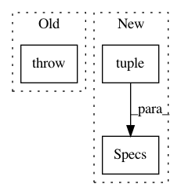

8ec8a7d4d8260c9da7f920cda61255d580e326ff,src/python/pants/bin/goal_runner.py,GoalRunnerFactory,__init__,#GoalRunnerFactory#Any#Any#Any#Any#Any#Any#Any#Any#,33
Before Change
f"{v1_goals}`. (You must explicitly enumerate every file because " f"`--owner-of` does "
f"not support globs.)"
)
raise FilesystemSpecsUnsupported(
f"Instead of running `{approximate_original_command}`, {suggestion}\n\n"
f"Why? Filesystem specs like `src/python/example.py` and `src/**/*.java` (currently) only "
f"work when running goals implemented with the V2 engine. When using V1 goals, either use "
f"traditional address specs like `src/python/example:foo` and `::` or use `--owner-of` "
f"for Pants to find the file"s owning target(s) for you.\n\n"
f"(You may find which goals are implemented in V1 by running `{pants_bin_name} --v1 --no-v2 "
f"goals` and find V2 goals by running `{pants_bin_name} --no-v1 --v2 goals`.)"
)
def _determine_v1_goals(self, options: Options) -> List[Goal]:
Check and populate the requested goals for a given run.
v1_goals, ambiguous_goals, _ = options.goals_by_version
After Change
BuildFileAddresses, [self._specs.filesystem_specs]
)
updated_address_specs = AddressSpecs(
dependencies=tuple(
SingleAddress(a.spec_path, a.target_name) for a in owned_addresses
),
tags=self._specs.address_specs.matcher.tags,
exclude_patterns=self._specs.address_specs.matcher.exclude_patterns,
)
self._specs = Specs(
address_specs=updated_address_specs,
filesystem_specs=FilesystemSpecs([]),
)
def _determine_v1_goals(self, options: Options) -> List[Goal]:
Check and populate the requested goals for a given run.
v1_goals, ambiguous_goals, _ = options.goals_by_version
In pattern: SUPERPATTERN
Frequency: 3
Non-data size: 3
Instances
Project Name: pantsbuild/pants
Commit Name: 8ec8a7d4d8260c9da7f920cda61255d580e326ff
Time: 2020-02-03
Author: ericarellano@me.com
File Name: src/python/pants/bin/goal_runner.py
Class Name: GoalRunnerFactory
Method Name: __init__
Project Name: pantsbuild/pants
Commit Name: ac0b7e4b3d8267c682b2e821f8db592ca94103e3
Time: 2018-03-18
Author: stuhood@twitter.com
File Name: tests/python/pants_test/engine/test_mapper.py
Class Name: AddressMapperTest
Method Name: resolve
Project Name: pantsbuild/pants
Commit Name: ac0b7e4b3d8267c682b2e821f8db592ca94103e3
Time: 2018-03-18
Author: stuhood@twitter.com
File Name: src/python/pants/engine/legacy/graph.py
Class Name: LegacyBuildGraph
Method Name: _inject_specs